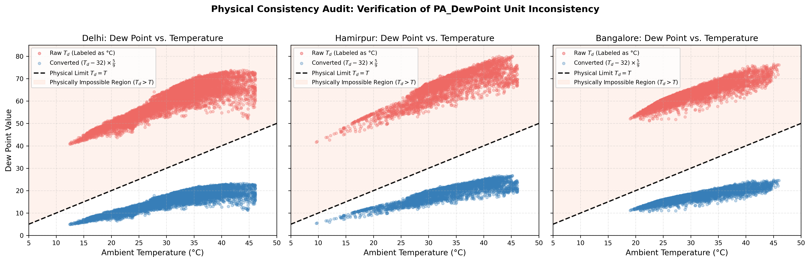
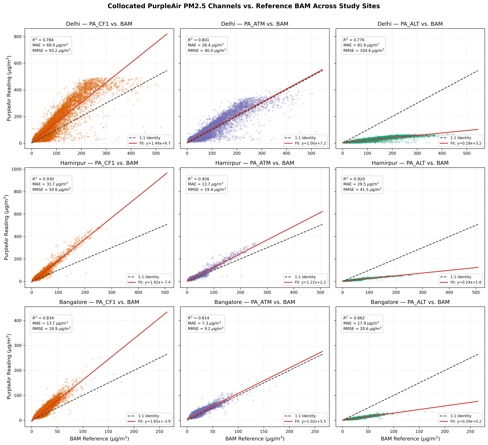
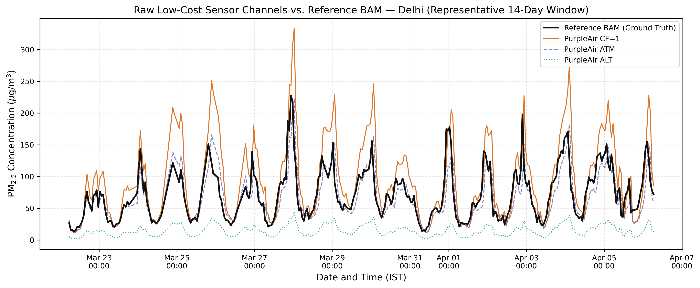
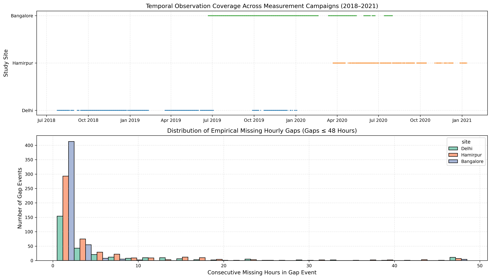
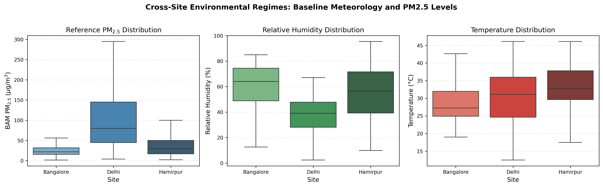

Project: Uncertainty-Aware Joint Calibration and Reconstruction of Low-Cost PM2.5 Sensor Networks (Checkpoint 1)
Research Rigor Checkpoint 1 — Validated
This audit report establishes the definitive empirical characteristics of the collocated low-cost air quality
sensor dataset provided in Campmier_Manuscript_Data.xlsx (associated with Campmier et al.,
Atmospheric Measurement Techniques, 2023). The workbook contains 18,584 hourly collocated observations
spanning three distinct meteorological and air-pollution regimes across India: Delhi (urban mega-city, severe episodic pollution),
Hamirpur (Himalayan foothills, rural/semi-urban), and Bangalore (peninsular plateau, moderate/tropical).
PA_DewPoint (°C) (values 40.8°C to 80.1°C) strictly exceeds PA_Temperature (°C)
(values 9.6°C to 46.1°C). In atmospheric thermodynamics, the dew point cannot exceed the dry-bulb temperature
(Td ≤ T). Investigation proves that dew point values were computed or recorded in degrees Fahrenheit
rather than Celsius, despite the column header. In strict compliance with research protocol, the column is preserved
as dew_point_raw, flagged suspicious, and completely excluded from model input features.
Thermodynamically, air reaches 100% relative humidity when ambient temperature drops to the dew point. A dew point of 70°C–80°C would require atmospheric boiling conditions or water vapor pressure exceeding 300 hPa, which is physically impossible under standard Earth tropospheric conditions.
| Site | Observations | Raw Td Range | Ambient T Range (°C) | Td > T Violations | MAE vs. Magnus (°C) | Converted (°F→°C) Range | Converted Td ≤ T Status |
|---|---|---|---|---|---|---|---|
| Delhi | 7,504 | 40.81 – 73.8 | 12.5 – 46.11 | 7,504 (100.0%) | 46.55°C | 4.89°C – 23.22°C | 100% Valid (0 violations) |
| Hamirpur | 3,639 | 41.63 – 80.1 | 9.64 – 46.11 | 3,639 (100.0%) | 44.97°C | 5.35°C – 26.72°C | 100% Valid (0 violations) |
| Bangalore | 7,441 | 51.15 – 76.56 | 19.02 – 45.99 | 7,441 (100.0%) | 42.81°C | 10.64°C – 24.76°C | 100% Valid (0 violations) |

dew_point_raw is preserved for provenance and excluded from neural feature sets.
The PurpleAir PA-II sensor uses dual Plantower PMS5003 laser particle counters that report three mass concentration estimates:
PA_CF1 (calibration factor = 1, standard factory curve), PA_ATM (atmospheric calibration curve),
and PA_ALT (alternative algorithm / altitude correction). These are three algorithmically derived channels from the same
instrument, not three independent spatial sensors.
| Site | Sensor Channel | MAE (μg/m³) | RMSE (μg/m³) | Mean Bias (μg/m³) | Relative Bias (%) | Pearson r | R² Score |
|---|---|---|---|---|---|---|---|
| Delhi | pa_cf1 |
69.04 | 93.23 | +57.97 | +55.65% | 0.8855 | 0.7842 |
| Delhi | pa_atm |
28.37 | 40.04 | +7.18 | +6.89% | 0.8948 | 0.8007 |
| Delhi | pa_alt |
81.90 | 104.55 | -81.9 | -78.62% | 0.8810 | 0.7761 |
| Hamirpur | pa_cf1 |
31.66 | 50.57 | +30.26 | +73.74% | 0.9642 | 0.9296 |
| Hamirpur | pa_atm |
13.69 | 19.38 | +11.29 | +27.53% | 0.9622 | 0.9259 |
| Hamirpur | pa_alt |
29.50 | 41.49 | -29.5 | -71.89% | 0.9591 | 0.9199 |
| Bangalore | pa_cf1 |
13.71 | 18.91 | +12.73 | +50.18% | 0.9130 | 0.8336 |
| Bangalore | pa_atm |
7.34 | 9.21 | +6.06 | +23.88% | 0.9020 | 0.8135 |
| Bangalore | pa_alt |
17.91 | 20.63 | -17.91 | -70.61% | 0.9282 | 0.8616 |


Although each sheet in the workbook has zero empty cells, the underlying time series is discontinuous. Comparing the observed timestamps against a continuous 1-hour regular grid reveals substantial absent periods caused by instrument maintenance, filter changes, and seasonal shutdowns.
| Site | Campaign Start | Campaign End | Expected Hours | Actual Hours | Absent Hours | Timeline Completeness | Discrete Gap Events |
|---|---|---|---|---|---|---|---|
| Delhi | 2018-07-24 06:30:00 | 2020-01-03 14:30:00 | 12,681 | 7,504 | 5,177 | 59.2% | 292 events |
| Hamirpur | 2020-03-22 17:30:00 | 2021-01-11 22:30:00 | 7,086 | 3,639 | 3,447 | 51.4% | 490 events |
| Bangalore | 2019-06-21 17:30:00 | 2020-07-31 17:30:00 | 9,745 | 7,441 | 2,304 | 76.4% | 489 events |

segment_id identifiers to preserve genuine temporal sequence continuity.The three sites represent starkly contrasting meteorological and pollution conditions, providing an ideal testbed for evaluating cross-location generalization and regime-conditioned conformal uncertainty:

| Site | Environmental Profile | BAM PM2.5 Mean ± Std | Temperature Range | Relative Humidity Range |
|---|---|---|---|---|
| Delhi | Severe episodic pollution, semi-arid continental, extreme seasonal swings | 104.17 ± 78.96 μg/m³ | 12.5°C – 46.1°C | 2.4% – 80.5% (Mean: 37.5%) |
| Hamirpur | Sub-Himalayan foothill valley, moderate pollution, temperate seasonal variations | 41.03 ± 38.31 μg/m³ | 9.6°C – 46.1°C | 9.8% – 95.5% (Mean: 55.1%) |
| Bangalore | Peninsular inland plateau, low/moderate urban traffic pollution, high humidity | 25.36 ± 14.18 μg/m³ | 19.0°C – 46.0°C | 12.6% – 85.0% (Mean: 60.0%) |
All core deliverables for Checkpoint 1 are completed, verified, and exported:
cleaned_data.parquet: Standardized schema with data-quality flags, temporal step diffs, and segment IDs.dataset_audit_report.html: Complete visual and methodological report (this document).dataset_audit_report.csv, sensor_bias_summary.csv, missing_timestamp_report.csv, dew_point_investigation.csv.outputs/figures/.